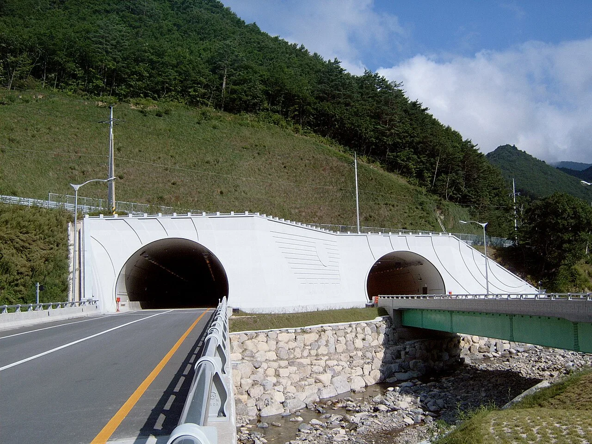
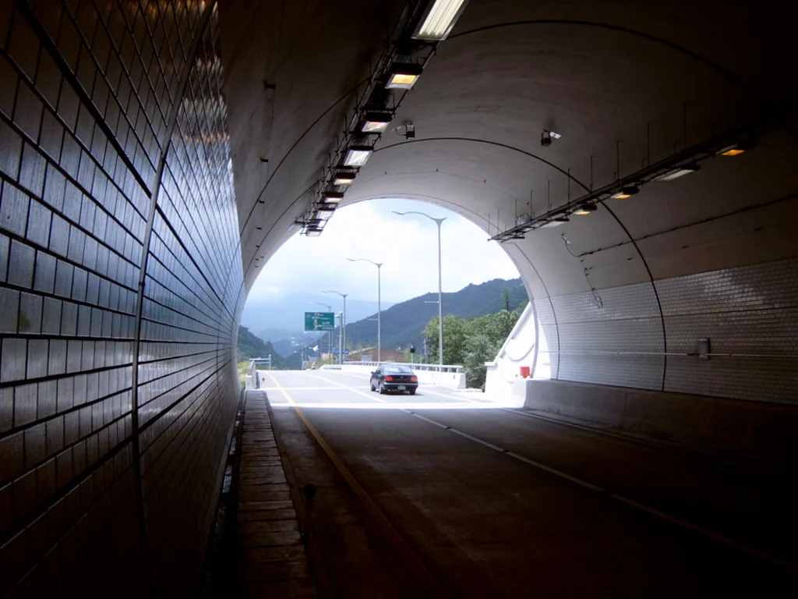

▲ 해발 1,330m 만항재. 고도가 높은 고갯길은 평지보다 먼저 얼기 시작한다 ⓒ 한국관광공사
1. 숫자부터 보면
최근 5년(2020~2024년) 동안 도로 결빙으로 발생한 교통사고는 4,112건입니다. 이 사고로 83명이 숨지고 6,664명이 다쳤습니다.
| 항목 | 수치 |
|---|---|
| 사고 건수 | 4,112건 |
| 사망 | 83명 |
| 부상 | 6,664명 |
| 12~1월 집중도 | 78% (3,198건) |
78%라는 숫자가 이 문제의 성격을 보여 줍니다. 겨울 넉 달에 고르게 퍼진 것이 아니라 두 달에 몰려 있습니다.
2. 왜 하필 12월과 1월인가
가장 추운 시기라서가 아닙니다. 오히려 한겨울에는 운전자들이 이미 겨울 운전 모드에 들어가 있습니다.
문제는 전환 구간입니다. 아직 겨울 타이어로 바꾸지 않았고, 도로에 제설이 준비되지 않았으며, 무엇보다 운전자가 노면이 얼 수 있다고 생각하지 않는 시기에 첫 결빙이 옵니다.
여기서 이 기사의 요점이 나옵니다. 통계상 사고는 12월에 몰리지만, 그 조건은 11월에 만들어집니다. 특히 고도가 높은 곳에서는 더 빠릅니다.
고도가 100m 올라갈 때마다 기온은 약 0.6도씩 떨어집니다. 해발 1,330m인 만항재를 예로 들면 평지보다 약 8도가 낮습니다. 산 아래가 영상 5도일 때 고갯마루는 이미 영하입니다.

▲ 미시령 구간. 터널 입·출구는 온도가 급격히 바뀌어 결빙이 잘 생기는 대표적인 자리다 ⓒ Wikimedia Commons
3. 아침 8시부터 10시
시간대별로 보면 오전 8~10시가 798건으로 가장 많습니다. 기온이 가장 낮은 새벽이 아니라 출근 시간대입니다.
이유는 교통량입니다. 밤사이 얼어붙은 노면 위로 차가 몰리는 시각이기 때문입니다. 결빙 자체는 새벽에 만들어지고, 사고는 사람이 움직이기 시작할 때 납니다.
그런데 치사율은 다른 시간대가 높습니다. 낮 12~2시가 사고 100건당 3.8명으로 가장 높습니다. 낮에는 노면이 녹았을 것이라는 전제로 속도를 내다가, 그늘 구간에 남은 살얼음을 만나기 때문으로 볼 수 있습니다.
여행 운전자에게 이 대목이 중요합니다. 아침 일찍 출발하는 것도 위험하지만, "낮이니까 괜찮겠지"라는 판단이 더 치명적이라는 뜻입니다.
4. 제동거리가 7배까지
결빙 노면에서 승용차의 제동거리는 평소의 최대 7배까지 늘어납니다.
숫자로 옮겨 보면 이렇습니다. 마른 노면에서 시속 60km로 달리다 급제동하면 대략 20m 안팎에서 멈춥니다. 같은 조건에서 7배면 140m입니다. 축구장 길이보다 깁니다.
이 숫자가 뜻하는 것은 하나입니다. 결빙 구간에서는 제동으로 상황을 수습할 수 없습니다. 애초에 속도를 낮추고 차간거리를 벌려 두는 것 외에 방법이 없습니다.

▲ 눈이 녹았다 다시 어는 구간이 가장 위험하다. 특히 해가 들지 않는 자리가 그렇다 ⓒ Wikimedia Commons
5. 어디서 생기나 — 다섯 곳
상습 결빙 위험 구간으로 꼽히는 곳은 정해져 있습니다.
| 구간 | 이유 |
|---|---|
| 교량 | 아래에서도 찬 공기가 닿아 노면이 먼저 식음 |
| 고가도로 | 교량과 같은 원리 |
| 터널 입·출구 | 온도가 급격히 바뀌고 물이 흘러나옴 |
| 급커브 | 횡방향 힘이 걸려 미끄러짐이 사고로 직결 |
| 산기슭 그늘 | 해가 들지 않아 종일 녹지 않음 |
가을 드라이브 코스와 이 목록을 겹쳐 보면 문제가 분명해집니다. 단풍을 보러 가는 길은 대개 산길이고, 산길에는 급커브와 그늘 구간이 반복됩니다. 계곡을 건너는 짧은 다리도 많습니다.

▲ 산을 넘는 도로는 그늘 구간과 급커브가 번갈아 나온다. 결빙 취약 조건이 한 곳에 모이는 지형이다 ⓒ Wikimedia Commons
6. 11월에 해 둘 것
첫째, 타이어 상태를 지금 확인하십시오. 겨울용 타이어의 성능은 기온 7도 아래에서 사계절용과 갈리기 시작합니다. 11월 산간 지역은 이미 그 구간에 들어가 있습니다.
둘째, 고갯길이 포함된 코스는 시각을 옮기십시오. 오전 8~10시에 고갯마루를 지나는 일정이라면, 두 시간 늦추는 것만으로 조건이 크게 달라집니다.
셋째, 다리 앞에서 미리 속도를 줄이십시오. 다리 위에서 감속하면 이미 늦습니다. 브레이크를 밟는 행위 자체가 미끄러짐의 시작이 됩니다.
넷째, 낮이라고 방심하지 마십시오. 치사율이 가장 높은 시간대가 낮 12~2시입니다. 응달 구간은 정오에도 얼어 있습니다.
다섯째, 통제 정보를 확인하십시오. 고갯길은 결빙이 심하면 통제됩니다. 가을 단풍철에는 산불조심기간 통제까지 겹치므로 출발 전 확인이 필요합니다.
정리하면 이렇습니다. 통계는 12월과 1월을 가리키지만, 그 통계에 잡히는 사고의 조건은 11월 산길에서 이미 완성됩니다. 가을 마지막 드라이브와 겨울 첫 드라이브 사이에는 생각보다 얇은 경계만 있습니다.